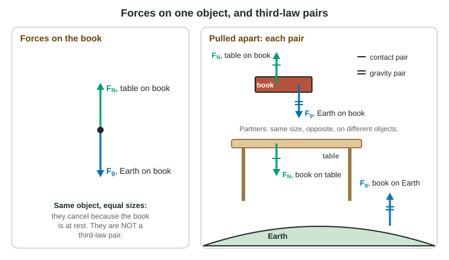

Lean on a wall and you feel the wall pushing back on your hands. Step off a small boat onto a dock and the boat slides away behind you. Forces never come alone: every interaction between two objects produces two forces, one on each object. This is Newton's third law, and it decides which forces cancel, which do not, and which ones you may ignore when you choose a system.
The third law
When object A exerts a force on object B, object B exerts a force on object A that is
- the same size,
- in the opposite direction,
- of the same type (both contact pushes, both gravitational pulls, both friction),
- and acting on the other object.
The two forces are called a third-law pair. They exist together, start together and stop together. Neither one is the "action" that causes the other.
A quick way to find a partner is to swap the two objects in the label and flip the direction. "FN, floor on box, up" has the partner "box on floor, down". "Fg, Earth on apple, down" has the partner "apple on Earth, up". Yes, the apple pulls Earth with the same size of force; Earth's huge mass means that force barely changes Earth's motion.
Partners never cancel each other

A book resting on a table has two forces on it: the table pushes up, Earth pulls down, and they are equal. Many students call these a third-law pair. They are not, because both act on the book, and they come from two different interactions with two different agents. They are equal only because the book is at rest; push down on the book and the table's push grows while the weight does not.
Third-law partners always act on different objects, so they appear on different free-body diagrams and can never cancel each other. That resolves the old puzzle of the horse and cart. The horse pulls the cart forward and the cart pulls the horse back just as hard, yet the cart can still roll: whether the cart speeds up depends only on the forces on the cart (the horse's pull and the friction on its wheels), not on the force the cart exerts on the horse.
| Third-law pair | Two forces that cancel on one object | |
|---|---|---|
| Objects | two different objects, one force on each | both on the same object |
| Type | always the same type | can be different types (normal force and weight) |
| Sizes | always equal | equal only in some situations |
| Interaction | one interaction | two different interactions |
Partner forces between unequal objects
A car hits a bug. The car pushes on the bug and the bug pushes on the car with forces of exactly the same size. The outcomes differ because the same force does far more to a 0.1 g bug than to a 1000 kg car. Equal forces do not mean equal effects.
Your own motion depends on partner forces too. To walk forward you push backward on the ground with your shoe; the ground pushes forward on you. A swimmer pushes water backward; the water pushes her forward. A truck's tires push back on the road; the road pushes the truck forward. In each case the forward force on you comes from outside you.
Internal and external forces
Now combine the third law with systems. Choose two blocks pushed together as your system. The push of the big block on the small block and the push of the small block on the big block are both inside the system: they are internal forces. Since they are a third-law pair, they add to exactly zero for the system. Only external forces, exerted by objects outside the boundary, are left.
This is why the center of mass is so useful. Internal forces can rearrange the parts of a system, but they cannot change how its center of mass moves. A car-and-driver system cannot drive itself forward by pushing on its own dashboard.
Worked example. A student pushes a 5.0 kg block with 16 N, and it pushes a 3.0 kg block ahead of it on a frictionless floor. The force of the big block on the small block is 6.0 N to the right. Find the force of the small block on the big block, and the horizontal external force on the two-block system.
Third law: the small block pushes the big block with 6.0 N to the left.
For the two-block system, the 6.0 N pair is internal and adds to zero. The only horizontal external force is the student's push: 16 N to the right.
Strings and pulleys
A rope or string pulls on what is tied to it, along the rope, toward the rope. It can never push. In this course strings are usually ideal: massless and unable to stretch. An ideal string has one tension all along its length, so it pulls each object at its ends with a force of the same size, and the objects tied to it move together.
An ideal pulley has no mass and no friction. It changes the direction of the string but not the tension: a string holding a 2.0 kg block at rest over an ideal pulley has a tension of 20 N (19.6 N, with g = 9.8 m/s²) on both sides of the pulley. Real ropes with mass have tension that changes along their length; the exam treats that only in words.
In a tug of war where each side pulls with 200 N, the rope's tension is 200 N, not 400 N. Tension is the pull at each end, not the sum of the two pulls.
Common slips
Calling two forces on the same object a pair. Making the partner of a heavy object's force bigger. Saying partners cancel, so nothing can move. Doubling or halving the tension at a pulley. Each of these fails the same test: partners are one interaction, two objects, equal sizes.